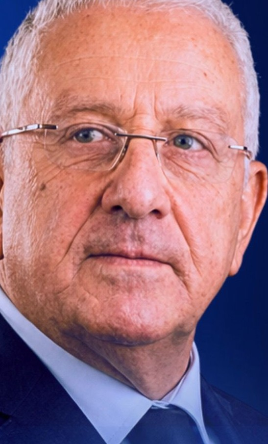

مختص في الطب الرياضي · طبيب سابق للمنتخب الوطني Sports Medicine Physician · Former National Team Doctor
كيف تصوّتHow to voteمقعد واحد، وأصوات قليلة جدًا. صوتك في القنصلية قد يحسم النتيجة. One seat, very few voters. Your vote at the consulate can decide the result.
رجل ميدان، لا وعود جديدة.A man of the field — not new promises.
طبيب معروف خدم المنتخب الوطني سنوات. خبرة وسمعة، لا اسم مجهول على ورقة. A respected doctor who served the National Team for years. Experience and reputation — not an unknown name on a ballot.
تمثيل فعلي للجزائريين في الخليج وآسيا: الخدمات القنصلية، الاستثمار، وحماية الحقوق. Real representation for Algerians in the Gulf and Asia: consular services, investment, and protecting rights.
أفعال قبل الوعود — نبدأ بما يمكن إنجازه الآن للجالية، لا بقوائم انتظار. Action before promises — start with what can be done now for the community, not waiting lists.
⚠️ الأيام والساعات تختلف حسب القنصلية — تواصل مع سفارتك لتأكيد البرنامج الدقيق. ⚠️ Days & hours vary by consulate — contact your embassy to confirm the exact schedule.